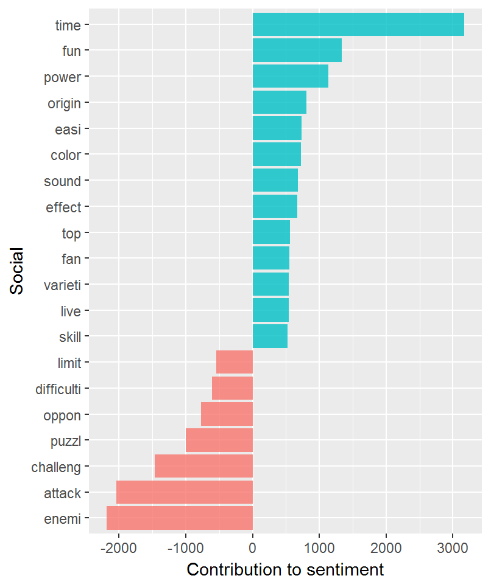
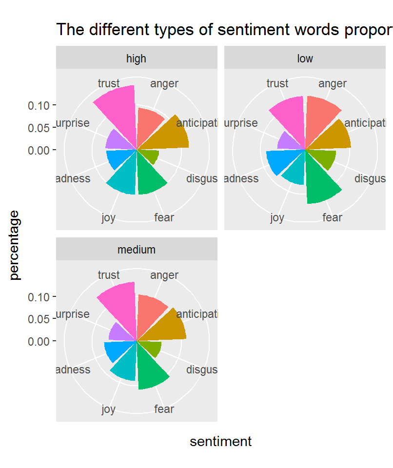

Sentiment and Experience Topics
General introduction of this step
Finally, we get the step to find out whether there is a relationship between a video game’s type and the sentiment word which would be used in the game review. Through this approach, we want to testify: 1. The topic model we built is effective or not; 2. Whether different sentiment words would play different roles when users evaluate different kinds of games.
Preliminary Works
First, we tried to find out which type each game belongs to. This is based on the topic model we build in the last step. If a game’s fitness score in a certain type is larger than 0.5, we would consider this game as in this type. Through this method, we got 932 games which belong to the “social” type, 659 games which belong to the “achieve” type, 821 games which belong to the “explore” type, and 503 games which belong to the “killer” type.
Word Frequency
After the determination about the types of video games, we wanted to get a general and basic idea about the word used in those kinds of games. As we see blow about the bar plots, there is some evidence which can prove our topic model’s validity. Though the word “time” is the most frequently used positive word in all four types of games, we can see that for social game, the word “fun” comes second. While for the “achieve” type, the second important positive word is power. Also we can see the second positive word for “explore” type of game is “adventure”, which is very easy for us to understand. As for the “killer” type, although we cannot get an explicit evidence about the positive word, we can see the most frequently used negative word stems are “chanlleng” and “oppon”.

Sentiment word using
Then we wanted to compare the proportion of different sentiment words used in different kinds of game reviews. Maybe it is a little bit difficult to tell, we still find the difference among those four kinds of games. Compared with high-quality “social” video games (high evaluation scores), there would be more words about anger, fear and less words about joy in the review of high-quality “achieve” video games. Also we found out the feeling of “anticipation” plays an important roles in high-quality “explore” video games.

Model Building
At last, we tried to get more solid evidence about our findings by building models. Firstly, by using ggplot, we show the linear relationship between different kinds of sentiment and the evaluation score. It is interesting that except for “sadness” which seems to play a significant role in all kinds of games, the relationships are quite weak. The most convincing negative relationship between negative word used and the evaluation scores is find in the “killer” type. While for the relationship of positive word using and the evaluation score for the “killer” type games become the weakest compared with other three types of game.
Then we used GAM model, which is proved to be the best model in previous analysis, to testify these relationships. What we should notice at first is that the models built for “social” and “achieve” types of games are better according to the MSE and RSquare value. But since the datasets are not so big after we make the division about these types, we think these four models are all acceptable. Through the comparison, we found that positive feelings are more important for the “explore” types of video games, while negative feelings play the weakest role for the evaluation. This finding can be understood since for people who enjoy exploration, they would probably get ready for facing different unknown situation. Compared with avoiding the negative feeling, they are more likely to value the positive feelings by open themselves to all kinds of situations. While for the “killer” types, negative feelings are more important for the evaluation, and it becomes more interesting when we see the subtype of negative feelings’ influence on the evaluation of “killer” types of games. Apparently this strong negative relationships are because of “anger” or “fear”, in fact the evaluation would not be influenced by these two negative feelings at all. So the thing is that users would not feel less satisfied if they feel angry or fear when they plays “killer” types of game, but feeling of sadness would significantly influence on their evaluation. We didn’t find much interesting things about the “social” type of games, which may result from the fact that the topic 1 we got from the topic model could be not so accurate.